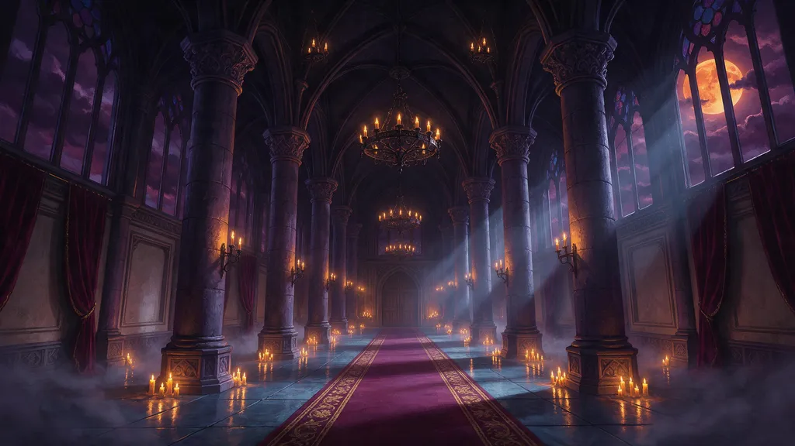

Cache hits
$0
8 of 30 calls: 3 exact repeats, 5 paraphrases.
Answered in 0 to 126 ms.
Speculative edge-to-cloud router
Answer each LLM call at the cheapest tier that can do it. Cache first, then a small model on your machine, then a GPU box, then the big cloud model. Every call is logged with tier, tokens, latency and dollars.

Eight doors. Each room holds posters with real numbers from single runs on 30 prompts, with no repeats. The losses are on the walls too.
Welcome to the Crypt. Here we keep every answer we have given before. A call that matches an old one costs nothing and comes back in a blink. One lesson was learned the hard way. Read the last poster.
$0
8 of 30 calls: 3 exact repeats, 5 paraphrases.
Answered in 0 to 126 ms.
Exact match first, then cosine similarity of 0.97 or more.
One SQLite file on disk. Exact-only mode needs no embedding model.
0.94
At this threshold the cache served wrong answers (r2 and p4).
The threshold is now 0.97. That fix is not yet measured.
This is the Ladder. Every call starts on the lowest rung. When a draft is not good enough, it climbs one rung. Never more. Big and small models of one family can also check each other. I will tell you what is proven, and what is not.
The phone rung is planned, not built.
Thinking is off on every tier.
0.85
The laptop 3B answers alone when mean token probability is 0.85 or more.
Heavy tasks skip the 3B.
200
Most tokens a heavy-task brief may carry. Or send none.
A long brief plus draft raised GPU tokens by 37%.
Only token ids and log probabilities cross the wire. Same model family. The verifier must be a llama.cpp server.
Not measured yet, so no speedup is claimed.
The Familiar is a small model that would live on your phone. I must be honest. It is planned, and none of it is built yet.
planned
A Gemma 3 1B or 4B model on Android is the plan.
No phone code is built.
3B
Qwen2.5-3B (q4_k_m) on llama.cpp, on a MacBook.
It answered 14 of 30 prompts alone. 13 of those 14 were right.
The Manor is your own GPU box. The Castle is the big rented one. On the GPU the cascade saved calls and time. But it did not save tokens, and it lost some quality. Look at the red numbers. They are the truth.
30 → 9
Qwen3-30B on one V100, against the cascade in front of it.
Median latency fell from 4.9 s to 1.9 s.
+37%
9,334 GPU tokens, against 6,809 for the GPU alone.
The handed-off prompts carried a brief and a draft.
20/24
Passed, against 24 of 24 for the GPU alone.
Misses: r2 and p4 (cache), c3 (local 3B).
305 s
The p90 latency, against 28 s. Four handoffs took about 300 s each.
The cause was not found. Treat it as unreliable.
The Tower holds the largest model. It is strong, and it is priced by the token. The cascade sent far fewer calls up here. Whether that made things better depends on what you value. Then came the ladder run. Only four heavy prompts climbed this high.
30 → 8
Qwen3.8-27B on Crusoe, against sending all 30 prompts.
Cost at list price: $0.01483 down to $0.01047 (29% lower).
145 s
Total wall time, against 31.8 s for cloud only.
Median latency rose from 689 ms to 1,547 ms.
$0.00976
Cascade cost on the 6 heavy coding tasks, against $0.00760.
Brief and draft added input tokens.
69.7%
Fewer top-model tokens: 16,484 down to 4,990.
Only 4 of 30 prompts reached gpt-oss-120b.
73.5%
Lower: $0.00350 down to $0.00093.
That is only $0.0026 on 30 prompts, because the model is cheap.
763B
DeepSeek-V4.1-Flash is the biggest on the key.
As top it spent $0.00301 on 3,560 tokens. Its price differs, so it is not comparable.
The Ledger keeps the true count. Single runs, 30 prompts, no repeats. We hoped to save 60 to 80% of tokens. Only one count got there, in one run. What we did save is calls and money on easy and repeated prompts.
MIXED
The goal was 60 to 80% fewer tokens.
Missed on the GPU run (+37%). Met only for top-model tokens in the ladder run.
7,229 → 4,599
Output tokens. But input tokens rose from 1,502 to 5,102.
Cost fell 29%, about $0.004 on 30 prompts.
5/6
Small coding tasks passed, against 6 of 6.
Cascade wall time was 145 s against 31.8 s.
2 GAPS
No speculative-verify speedup. bench/spec_results.md does not exist yet.
No cold-load time for the GPU model.
69.7%
Fewer top-model tokens, 16,484 to 4,990.
Quality held on every checkable prompt: easy, repeat, paraphrase and small code.
1.7 s
Median latency, against 0.84 s calling the top model directly.
p90 was 59.7 s while the GPU box was shared. One pass, 4 heavy prompts reached the top.
The Guild is for companies. Run your own hardware first. Your apps keep their OpenAI SDK. They change one address and one key. Each tenant gets its own keys, and Prometheus can watch it all.
Change only base_url and the API key.
Every request goes through the ladder router.
SHA-256
Only a hash of each key is stored, never the key.
Each tenant has its own cache namespace.
/metrics
Text by tenant and tier.
Scrape it from inside your network.
70+
Risky actions score 0 to 100. At 70 or more they wait for approval.
It is a rule list and can miss unusual phrasing.
You have seen the castle. Now build your own. Tests are offline. They need no models and no keys. Good night, and may your tokens be few.
Setup makes a venv and installs. Tests need no keys.
serve-local starts llama.cpp on 127.0.0.1:8080.
.env
Cloud keys go in .env (copy .env.example). It is git-ignored.
Models are not in the repo.
3 docs
The HUD shows every call live.
Deploy and architecture notes sit in the repo.